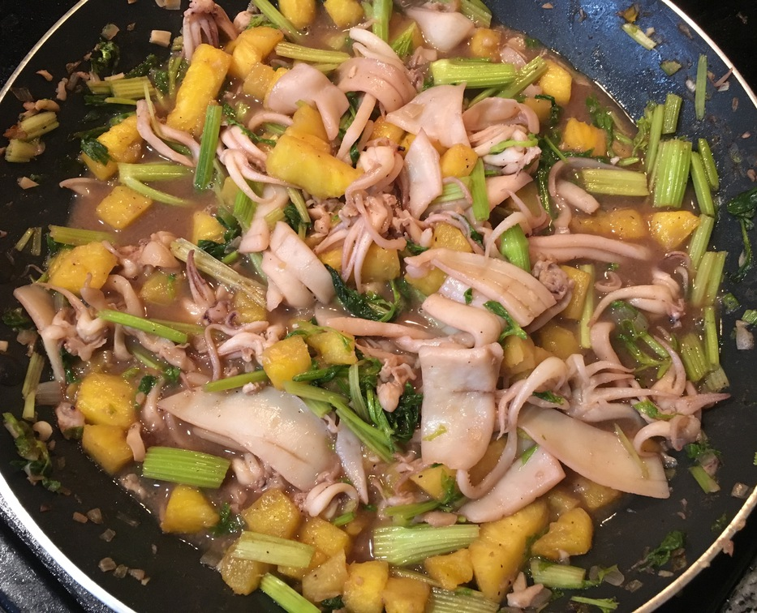

| Other | Meat | Veggie | Fruit |
|---|---|---|---|
| oyster sauce | squid | chinese celery | pineapple |
| pepper | garlic | ||
| salt | shallot |
| instructions |
|---|
| Clean squid well, cut patterns into patterned chunks or circles |
| Marinate squid with black pepper and a little salt |
| Cut chinese celery into inch long segments and cut pineapple into thin chunks |
| Golden minced shallots and garlic |
| Add squid, discarding any water that comes out from the squid |
| Stir in pineapple and chinese celery |
| Add diluted oyster sauce, when squid is done (changes from translucent color to white) |
| Adjust to taste |